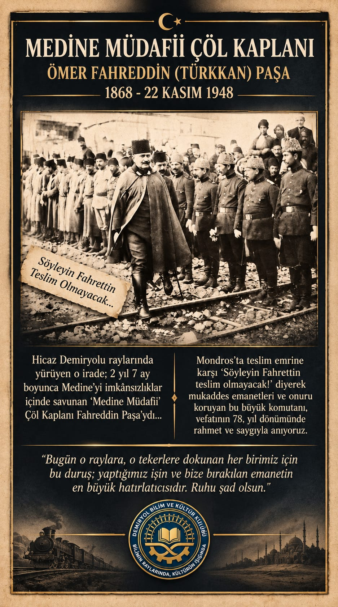
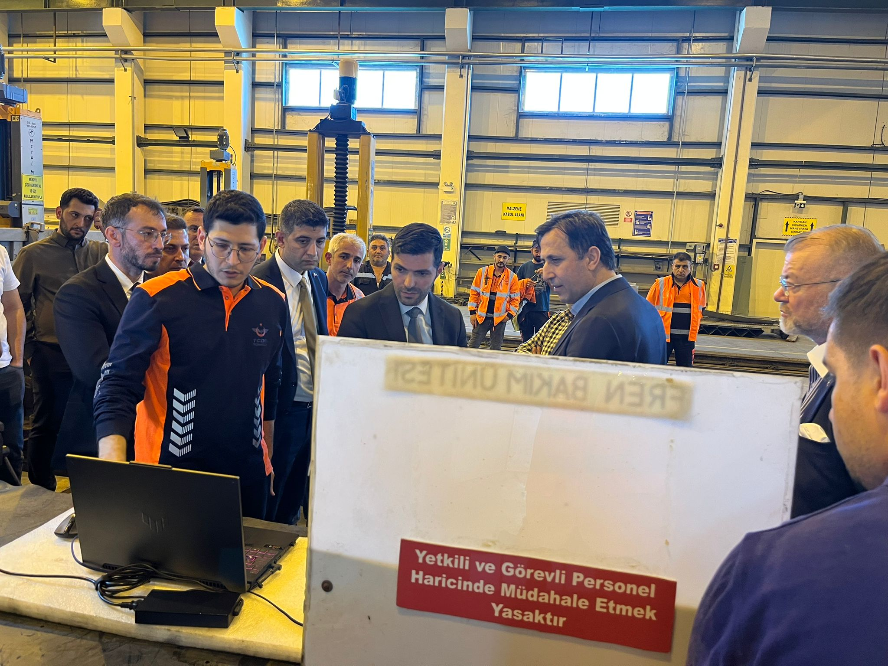

Saha Tecrübesiyle Şekillenen Yerli & İnovatif Teknolojiler
TCDD Taşımacılık A.Ş. Gebze Vagon Bakım Onarım Atölye Müdürlüğü bünyesinde doğan; demiryolu mekaniği, emniyet sistemleri ve saha tecrübesini bilimsel yaklaşımlarla harmanlayan kurumsal platform.
💡 BİLİYOR MUYDUNUZ? • TEKNİK & DÜNYA DEMİRYOLU BİLGİSİ
Yük vagonlarında tekerlek yüzeyinde oluşan 1 mm'lik apleti (düzleşme), raya uygulanan darbe kuvvetini %300 oranında artırır. Sensörlü takip sistemleri bu arızaları anında yakalar.
📌 Hatırlatmalar ve Özel Günler
Tarihimize iz bırakan değerlerimiz, anma günlerimiz ve kurumsal kutlamalarımız.
24 KASIM • ÖZEL KUTLAMA
Öğretmenler Günü Kutlu Olsun
Eskişehir Eğitim Merkezi hocalarımızın Öğretmenler Günü'nü kutlarız.
Afişi Tam Boyut Gör ➔

22 KASIM 1948 • ANMA GÜNÜ
Medine Müdafii Fahreddin Paşa
Çöl Kaplanı Fahreddin Paşa'yı vefatının 78. yılında rahmetle anıyoruz.
Afişi Tam Boyut Gör ➔
13 KASIM 1957 • ANMA GÜNÜ
Nuri Demirağ'ı Rahmetle Anıyoruz
Demiryolculuğun ve yerli havacılığın öncüsü Nuri Demirağ.
Afişi Tam Boyut Gör ➔
🛑 Fren Evi Dijital Kontrol Paneli
Bilimin Raylarında, Saha Tecrübesinin Ocağında • Gebze Fren Sistemleri Birimi
GEBZE FREN KOKPİTİ // TEKNİK HAFIZA
ANAHAT: 5.0 BAR (STABİL)
1. Purjör Tutulması (Blokaj)
⚠️ Saha Belirtisi: Pnömatik test sırasında purjör çıkışından su/hava tahliyesinin olmaması, silindir boşaltma gecikmesi.
Basınç Tahliyesi: İlgili hattın basıncı emniyetli şekilde sıfırlanır.
Söküm: Purjör gövdesi sökülerek yay tansiyonu ve O-ringler kontrol edilir.
Temizlik: Tiftiksiz bez ve onaylı solüsyon kullanılır (Asla zımpara kullanılmaz).
Conta Yenileme: Deforme olmuş contalar orijinal yenileriyle değiştirilir.
Saha Testi: Hat 5 bar basınçlandırılarak manuel/otomatik tahliye test edilir.
2. Regülatör (Boşluk Kolu) Ayarsızlığı
⚠️ Saha Belirtisi: Pabuç-tekerlek mesafesinin standart dışı olması, sefer sonrası tekerleklerde aşırı lokal ısınma.
Ölçüm: Pabuçlar serbestken kumpas/mastar ile çalışma boşluğu ölçülür.
Temizlik: Cırcır dişlileri balata tozu ve kirden arındırılır.
Kalibrasyon: Ayar cıvatasıyla milimetrik çalışma boşluğu ayarlanır.
Emniyet: Bağlantı pimleri ve emniyet segmanları doğrulanır.
Fonksiyon: Test tezgahında deneme frenlemesi yapılır.
Akerman Ana Hat
Vagona hava bağlanan musluktur. Vagonlar arası pnömatik ana boru hattını açıp kapatmaya yarar.
Menot Bağlantı
Fren sisteminde veya hat üzerinde manevra, bakım ya da tahliye amacıyla kullanılan ara bağlantı elemanıdır.
Kaplin Hortum
Vagonlar arasında basınçlı havanın kesintisiz iletilmesini sağlayan esnek fren hortumu başlığıdır.
Distribütör Valf Kontrol
Ana borudaki basınç değişimlerine göre silindire hava dolumunu yöneten ana valftir (SAB WABCO / Knorr-Bremse).
Regülatör Ayar
Pabuç aşındıkça tekerlek arasındaki çalışma boşluğunu otomatik sabitleyen mekanik ayar koludur.
Purjör Tahliye
Sistem içerisindeki aşırı basıncın, havanın veya yoğuşan suyun dışarı atılmasını sağlayan tahliye valfidir.
💧 Purjör Bakımı Püf Noktaları
Özellikle mevsim geçişlerinde hava hatlarında biriken kondens suyu korozyona yol açar. Manuel tahliye aksatılmamalı; temizlikte tiftiksiz bez tercih edilerek oturma yüzeyleri asla aşındırılmamalıdır.
⚙️ Regülatör Bakımı Püf Noktaları
Cırcır dişlileri yoğun toz ve balata tozuna maruz kalır. Bakımda özel gres ile yağlanmalı, bağlantı pimleri ve burçlar aşınma yönünden incelenmelidir. Yanlış ayar tekerlek apleti riskini tetikler.
🎛️ Test Tezgahı SAB / KNORR
ANA BORU (HENDE)5.0 BAR
FREN SİLİNDİRİ0.0 BAR
[SİSTEM HAZIR] Ana boru 5.0 bar. Frenler çözük konumda.
🧮 Fren Yüzdesi (λ) UIC
TOPLAM: 62.0 t FREN ORANI
%87.1
Kulüp Duyuruları ve Haberler
İSG, Çalıştay ve Gelecek Etkinlikler
ULUSLARARASI FUAR • 24-26 MART 2027
Eurasia Rail Fuar Katılımı
Yerli ve milli Ar-Ge projelerimizin demiryolu sektörüne tanıtımı yapılacaktır.
Etkinlik Detayları ➔
Teknik Projelerimiz & Ar-Ge Vizyonu

PROJE 1 • AKILLI TANIMA
Demiryolu Araç Kimliği Tanıma Sistemi
Görüntü İşleme Tabanlı Araç Kimliği Tanıma Sistemi.
Proje Detaylarını İncele ➔
Hakkımızda & Kulüp Yapısı
KURUMSAL KİMLİK
Biz Kimiz?
Demiryol Bilim ve Kültür Kulübü, TCDD Taşımacılık A.Ş. Gebze Vagon Bakım Onarım Atölye Müdürlüğü bünyesinde kurulmuştur.